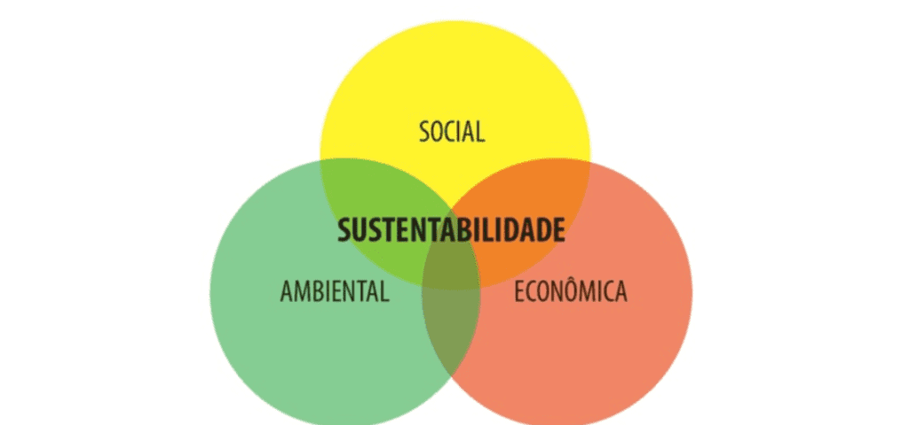
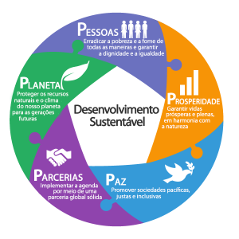

Desenvolvimento sustentável: equilíbrio entre urbano e rural
O desenvolvimento sustentável busca atender às necessidades atuais sem comprometer as futuras,
equilibrando áreas urbanas e rurais. Para isso, é importante integrar infraestrutura e serviços,
preservar o meio ambiente, promover desenvolvimento econômico diversificado, planejar de forma
integrada, valorizar as comunidades rurais e usar tecnologia e inovação. Esse equilíbrio favorece
a qualidade de vida, a conservação ambiental e o crescimento responsável, contribuindo para
sociedades mais justas, resilientes e sustentáveis.

Qual a sua importância?
Segundo o AEGRO (2023), a sustentabilidade no agronegócio é crucial para garantir a manutenção dos
recursos naturais e a produtividade agrícola a longo prazo, ao mesmo tempo em que reduz os impactos
ambientais negativos e favorece a biodiversidade. Além disso, ela agrega valor aos produtos brasileiros
no mercado e assegura uma remuneração justa aos moradores rurais. A adoção de práticas sustentáveis
também otimiza a produção com o mínimo de insumos químicos.

Quais são as práticas que devem ser implementadas e como a tecnologia te ajuda nesse processo?
Segundo o AEGRO (2023), para alcançar a sustentabilidade no campo, diversas práticas podem ser implementadas:
- Rotação e diversificação de culturas: ajuda a manter a saúde do solo e reduzir a incidência de pragas e doenças.
- Adubação verde: utilização de plantas para melhorar a fertilidade do solo.
- Agricultura orgânica: cultivo sem o uso de produtos químicos sintéticos.
- Manejo integrado de pragas: controle eficiente com menor impacto ambiental.

Referências
Site AEGRO. Acesso em 26 de maio de 2025.
Textos tirados do site AEGRO sobre o tópico "Desenvolvimento sustentável", 26 de maio de 2025.